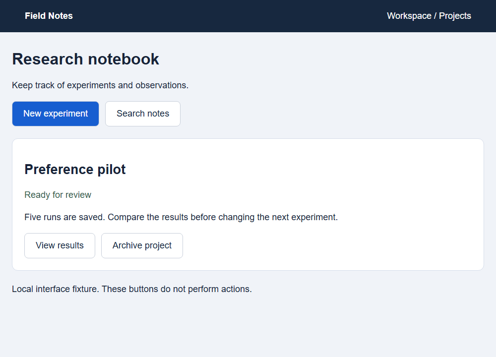

Recorded test
See where the model would click
Choose an example and compare its click with the target.
Recorded examples
The red dot is the model’s click. The green box marks the right target. These are saved test results, not a live model.
Loading recorded predictions...
Exact position and full-size image
View the full-size screenshotMark a point on your own screenshot
This is a manual tool. Your image stays in this browser; no model runs on it.
Click the image to mark a target point, or focus it and use Enter and the arrow keys. Hold Shift for larger steps. The saved point is measured against the original image.

No point selected.